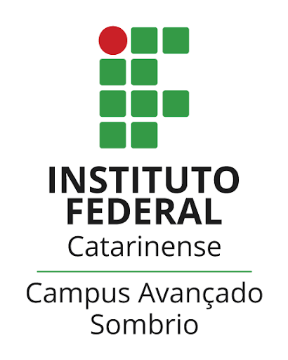

🇧🇷 O que estou aprendendo atualmente:
🇺🇸 What I'm currently learning:


🇧🇷 Técnico em Informática pelo Instituto Federal Catarinense Campus Avançado Sombrio (IFC-CAS). Cursando Ciências da Computação pela Universidade Federal da Fronteira Sul (UFFS).
Entusiasta da computação, com experiência em Photoshop e edição de vídeos.
🇺🇸 Computer Technician at Instituto Federal Catarinense Campus Avançado Sombrio (IFC-CAS). Studying Computer Science at the Universidade Federal Fronteira Sul (UFFS).
Computer enthusiast, with experience in Photoshop and video editing.
|  | Instituto Federal Catarinense / Técnico em Informática Integrado ao Ensino Médio / 2018 – 2021 (Término em 2021 em razão da pandemia) / Atividades e grupos: Bolsista Projeto Fênix |
| Cursando Ciências da Computação na UFFS | |
🇧🇷 O que estou aprendendo atualmente:
🇺🇸 What I'm currently learning:
| https://www.linkedin.com/in/eduardocarniel | https://github.com/eduardoschmitt |
© 2021 Eduardo Schmitt